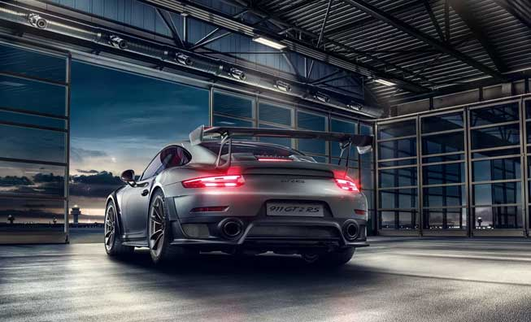
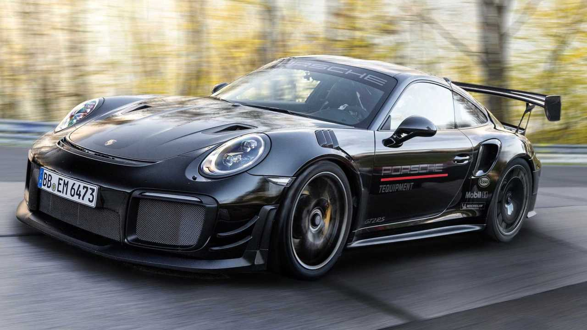

The Porsche 911 GT2 RS Clubsport
A duel? With pleasure, any time. Coming second? Never. The new 911 GT2 RS Clubsport is the most powerful, non-street legal, GT customer sports car Porsche has ever built, a high-performance race car created for track day and Clubsport events on race tracks around the globe. In an exclusive limited edition of 200 units globally.
The engine consists of an Aluminum six-cylinder rear-mounted twin-turbo horizontally opposed engine with rigid mounting it pulls 700hp at 7,000rpm and weighs approx. 1,390kg
The Transmission is a Rigidly mounted performance-based 7-speed PDK-gearbox (DCT, dual clutch transmission) with short, gearshifts


